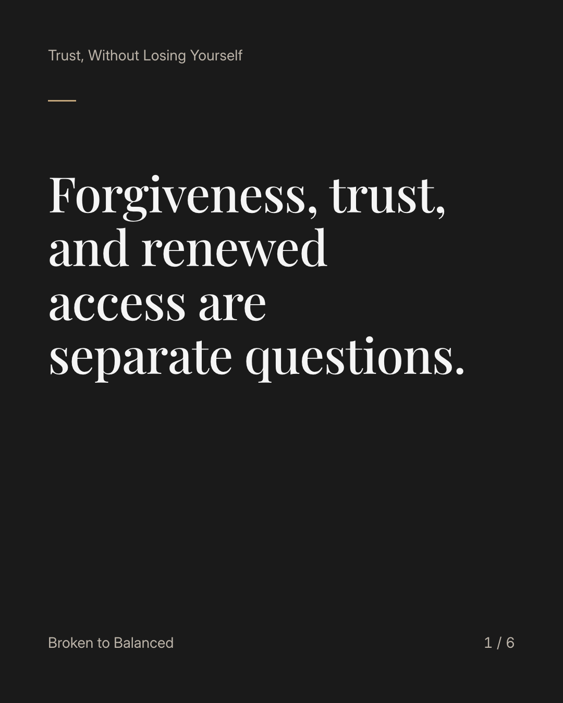
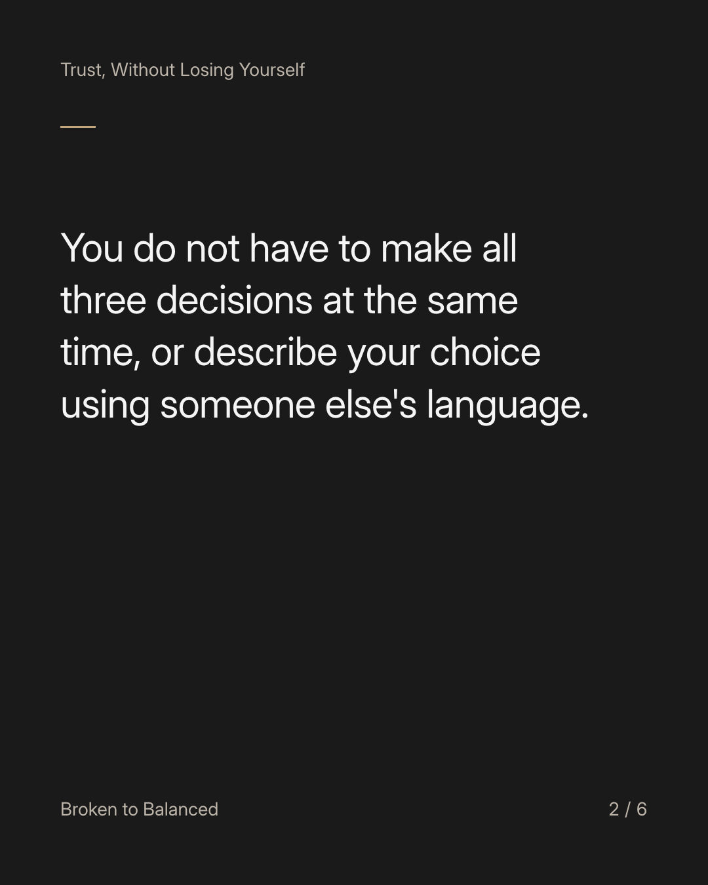
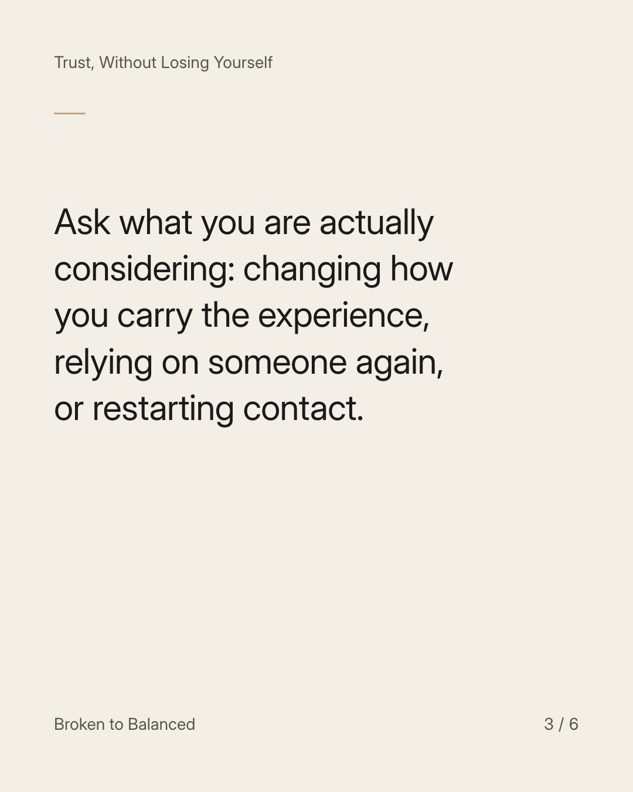
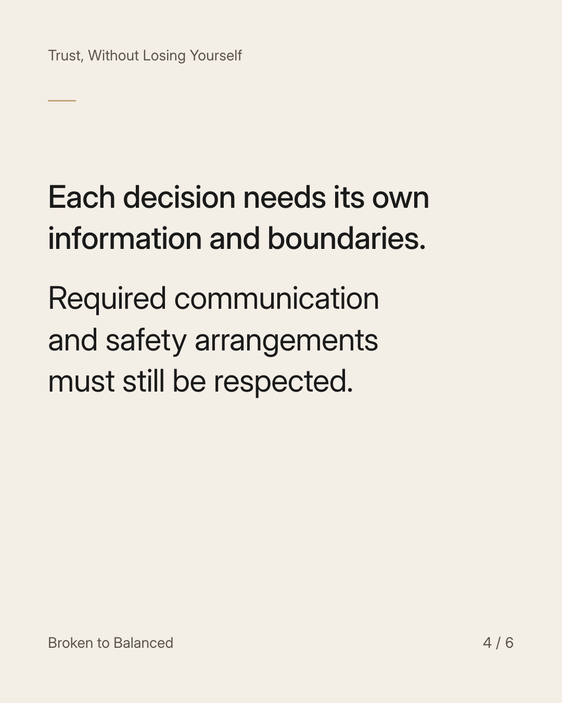
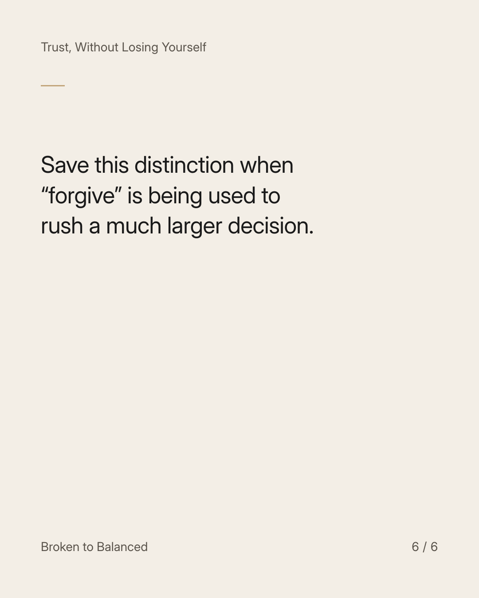

Exact text and accessibility text
Forgiveness, trust, and renewed access are separate questions.
Slide 1 of 6. Forgiveness, trust, and renewed access are separate questions.


Exact text and accessibility text
You do not have to make all three decisions at the same time, or describe your choice using someone else's language.
Slide 2 of 6. You do not have to make all three decisions at the same time, or describe your choice using someone else's language.


Exact text and accessibility text
Ask what you are actually considering: changing how you carry the experience, relying on someone again, or restarting contact.
Slide 3 of 6. Ask what you are actually considering: changing how you carry the experience, relying on someone again, or restarting contact.


Exact text and accessibility text
Each decision needs its own information and boundaries. Required communication and safety arrangements must still be respected.
Slide 4 of 6. Each decision needs its own information and boundaries. Required communication and safety arrangements must still be respected.

Exact text and accessibility text
There is no obligation to reconcile with someone who has harmed you.
Slide 5 of 6. There is no obligation to reconcile with someone who has harmed you.


Exact text and accessibility text
Save this distinction when “forgive” is being used to rush a much larger decision.
Slide 6 of 6. Save this distinction when “forgive” is being used to rush a much larger decision.
Exact caption
Plain-text fallback: select and copy the caption.